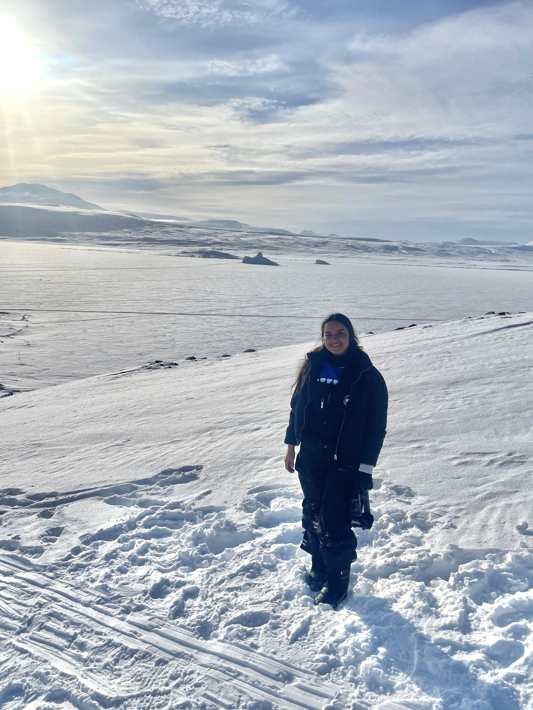
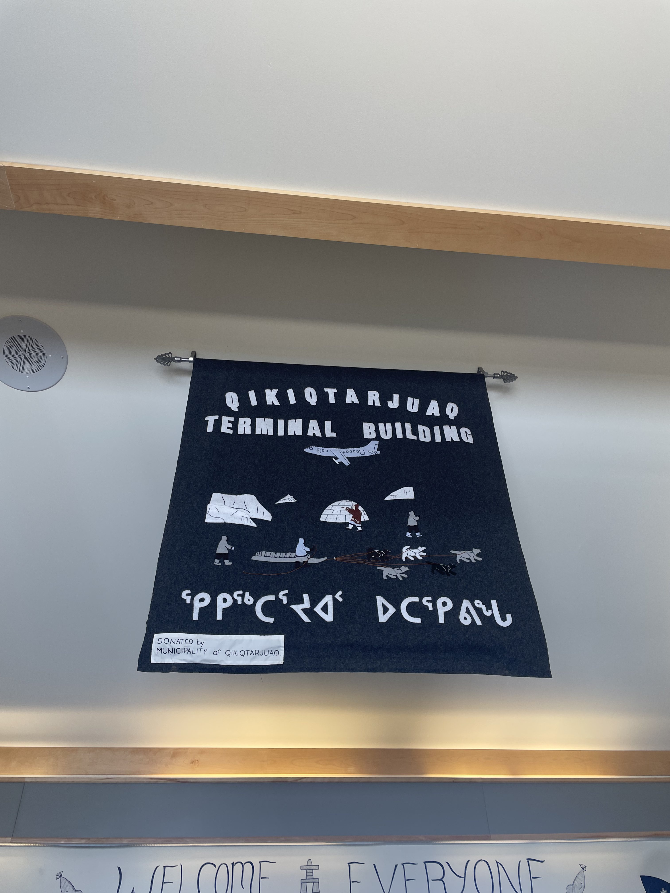

Qikiqtarjuaq Sea Ice Field School
Advanced Field School on Arctic Sea Ice: Tracking Changes Across Scales
April 9 – 18, 2025 · Qikiqtarjuaq, Nunavut

In April 2025, I participated in the Sentinel North Advanced Field School on Arctic Sea Ice, hosted at the Qikiqtarjuaq Research Station on Broughton Island, Nunavut. Run by Université Laval and the UAK international research initiative, the ten-day program brought together graduate students and postdoctoral fellows from across disciplines — remote sensing, marine biology, optics-photonics, biochemistry, and Arctic environmental science — to study sea ice change from micro-scale crystal structure to landscape-level dynamics.
Host: Université Laval · Qikiqtarjuaq Research Station
Location: Qikiqtarjuaq (Broughton Island), Nunavut, Canada
Dates: April 9 – 18, 2025
Focus: Tracking sea ice changes across scales — optics, biology, physics, remote sensing, and community knowledge

On the Ice
The field school combined classroom lectures with extensive time on the landfast sea ice surrounding Qikiqtarjuaq. We conducted hands-on sampling and observations — measuring ice cores, studying crystal micro-structure under polarized light, and documenting snow-ice interactions. The interdisciplinary approach meant that biologists, physicists, and remote sensing researchers were all working side-by-side, learning from one another's tools and perspectives.

Fieldwork & Exploration
Beyond the formal curriculum, some of the most memorable moments came from exploring the landscape around Qikiqtarjuaq by snowmobile and on foot. The vast expanse of landfast ice, the towering icebergs frozen into the sound, and the dramatic light of the high Arctic spring made every excursion extraordinary (especially for someone who grew up in Utqiagvik -- where our sea ice is much different!). .


Community & Inuit Knowledge
A central part of the field school was learning from and engaging with the community of Qikiqtarjuaq. The program highlighted Inuit knowledge systems and local sea ice monitoring initiatives, including the SmartIce program, which combines community-based monitoring with technology to track sea ice conditions. Conversations with community members provided perspectives on how changing ice affects travel, hunting, and daily life — insights that no dataset alone can provide.
As someone who grew up in Utqiaġvik, this resonated deeply with me. The field school reinforced my commitment to research that is community-engaged and grounded in the realities of the people most affected by Arctic change.
Takeaways
The Qikiqtarjuaq field school was a formative experience. It deepened my technical skills in sea ice observation, broadened my understanding of interdisciplinary Arctic science, and — most importantly — strengthened my belief that meaningful research must be rooted in community engagement and reciprocity. I'm grateful to the Sentinel North team, Université Laval, and the community of Qikiqtarjuaq for making this possible.